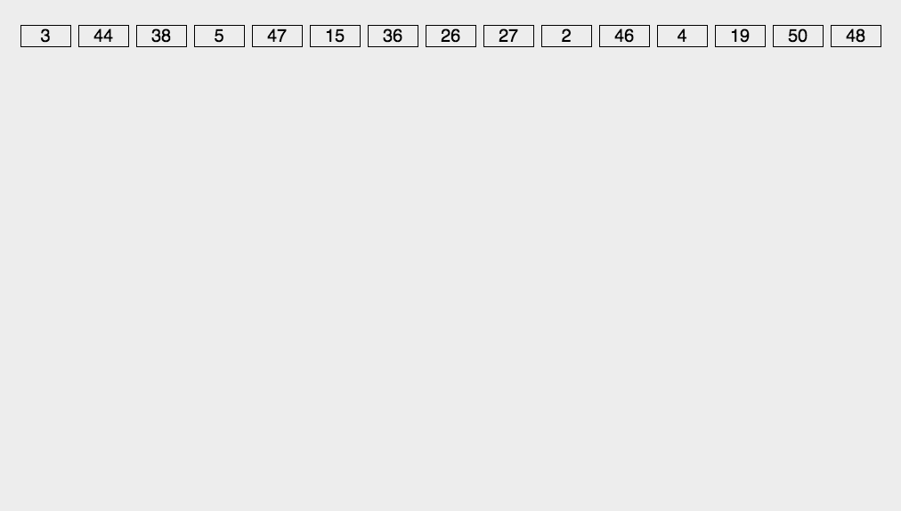

7. 排序算法¶
- 比较排序
- 插入排序
- 选择排序
- 冒泡排序
- 快速排序
- 堆排序
- 归并排序
- 希尔排序
- 非比较排序
- 计数排序
- 桶排序
- 基数排序
{kind=link}
- 稳定性 ：键值相同的元素在排序之后仍能保持原来的相对顺序。
- 空间复杂度 ：算法的额外内存开销，不包括输入所占空间。
- in-place ：原位运算，直接在输入数组/链表的基础上修改。
- k ：计数排序/桶排序，桶的个数；基数排序，关键字位数。
7.1. 插入排序¶

\(\color{darkgreen}{Code}\)
1 2 3 4 5 6 7 8 9 10 11 12 13 14 | template<class T>
void insertionSort(T* arr, int len)
{
if(!arr) return;
for(int i = 1; i < len; ++i)
{
int j = i;
while(arr[j] < arr[j-1])
{
swap(arr[j], arr[j-1]);
-- j;
}
}
}
|
7.2. 选择排序¶

\(\color{darkgreen}{Code}\)
1 2 3 4 5 6 7 8 9 10 11 12 13 14 | template<class T>
void selectionSort(T* arr, int len)
{
if(!arr) return;
for(int i = 0; i < len - 1; ++i)
{
int k = i;
for(int j = i+1; j < len; ++j)
{
if(arr[j] < arr[k]) k = j;
}
swap(arr[i], arr[k]);
}
}
|
7.3. 冒泡排序¶

\(\color{darkgreen}{Code}\)
1 2 3 4 5 6 7 8 9 10 11 12 13 | // 下起泡：大的数下沉
template<class T>
void bubbleSort(T* arr, int len)
{
if(!arr) return;
for(int i = 1; i < len; ++i)
{
for(int j = 0; j < len - i; ++j)
{
if(arr[j] > arr[j+1]) swap(arr[j], arr[j+1]);
}
}
}
|
1 2 3 4 5 6 7 8 9 10 11 12 13 | // 上起泡：小的数上浮
template<class T>
void bubbleSort(T* arr, int len)
{
if(!arr) return;
for(int i = 0; i < len - 1; ++i)
{
for(int j = len - 1; j > i; --j)
{
if(arr[j] < arr[j-1]) swap(arr[j], arr[j-1]);
}
}
}
|
7.4. 快速排序¶

\(\color{darkgreen}{Code}\)
1 2 3 4 5 6 7 8 9 10 11 12 13 14 15 16 17 18 19 20 21 22 23 24 25 26 | // 全闭区间 [start, end]
template<class T>
int partion(T* arr, int start, int end)
{
T p = arr[start]; // pivot
int left = start;
int right = end + 1;
while(true)
{
while(arr[++left] < p && left < end);
while(arr[--right] > p);
if(left >= right) break;
swap(arr[left], arr[right]);
}
swap(arr[start], arr[right]);
return right;
}
template<class T>
void quickSort(T* arr, int start, int end)
{
if(!arr || start >= end) return;
int p = partion(arr, start, end);
if(p > start + 1) quickSort(arr, start, p-1);
if(p < end - 1) quickSort(arr, p+1, end);
}
|
快速排序的空间复杂度是 \(\mathcal{O}(\log n)\) ，用于保存递归的函数栈，最差情况下为 \(\mathcal{O}(n)\) 。
7.5. 堆排序¶

建堆，从 最后一个非叶子节点 开始调整，使其成为大顶堆；将堆顶元素放到数组末尾；最后一个叶子节点放到堆顶，重新调整堆；…。
\(\color{darkgreen}{Code}\)
1 2 3 4 5 6 7 8 9 10 11 12 13 14 15 16 17 18 19 20 21 22 23 24 25 26 27 | // 调整堆。区间 [start, end]，除了 start 不满足大顶堆的性质之外，其他节点都满足。
template<class T>
void heapAdjust(T* arr, int start, int end)
{
T tmp = arr[start];
for(int i = 2*start+1; i <= end; i = 2*i + 1)
{
if(i < end) i = arr[i] > arr[i+1] ? i: i+1;
if(arr[i] < tmp) break;
arr[start] = arr[i];
start = i;
}
arr[start] = tmp;
}
// 某节点下标为 i，则其左右子节点的下标分别为：2*i+1，2*i+2 。
template<class T>
void heapSort(T* arr, int len)
{
if(!arr) return;
for(int k = (len-1-1)/2; k>=0; --k) heapAdjust(arr, k, len-1);
for(int i = 1; i <= len; ++i)
{
swap(arr[0], arr[len-i]);
heapAdjust(arr, 0, len-1-i);
}
}
|
初始建立大顶堆的时间复杂度为 \(\mathcal{O}(n \log n)\) ；每次取出堆的最大元素并重新调整堆也要用 \(\mathcal{O}(\log n)\) 时间。
7.6. 归并排序¶

\(\color{darkgreen}{Code}\)
1 2 3 4 5 6 7 8 9 10 11 12 13 14 15 16 17 18 19 20 21 22 23 24 25 26 27 28 29 30 31 32 33 34 | // 把有序表 from: [start, mid] 和 from: [mid+1, end] 合并到临时数组 to: [start, end]。
template<class T>
void merge(T* from, T* to, int start, int mid, int end)
{
int i, j, k;
for(i = start, j = mid+1, k = start; i <= mid && j <= end; ++k)
{
if(from[i] < from[j]) to[k] = from[i++];
else to[k] = from[j++];
}
for(;i <= mid; ) to[k++] = from[i++];
for(;j <= end; ) to[k++] = from[j++];
}
template<class T>
void mergeSort(T* arr, T* atmp, int start, int end)
{
if(start == end) return;
int mid = start + (end - start) / 2;
mergeSort(arr, atmp, start, mid);
mergeSort(arr, atmp, mid+1, end);
merge(arr, atmp, start, mid, end);
for(int i = start; i <= end; ++i) arr[i] = atmp[i];
}
template<class T>
void mergeSort(T* arr, int start, int end)
{
if(!arr) return;
T* atmp = new T[MAX_LEN]; // 申请临时空间
fill(atmp, atmp + MAX_LEN, -1);
mergeSort(arr, atmp, start, end);
delete[] atmp;
}
|
1 2 3 4 5 6 7 8 9 10 11 12 13 14 15 16 17 18 19 20 21 22 23 24 25 26 27 28 29 30 31 32 33 | /* 非递归形式：2-路归并 */
// 依次把相邻的两个长度为 gap 的子数组合并为长度为 2*gap 的数组（调用 merge 函数）
template<class T>
void mergePass(T* arr, T* atmp, int n, int gap)
{
int start = 0;
while (start + 2 * gap < n)
{
merge(arr, atmp, start, start + gap - 1, start + 2 * gap - 1);
start += 2 * gap;
}
if (start + gap - 1 < n - 1) merge(arr, atmp, start, start + gap - 1, n - 1); // 最后的两个子数组不等长，一个长为 gap ，一个长小于 gap
else // 只剩下一个子数组
{
for (int j = start; j < n; ++j) atmp[j] = arr[j];
}
}
template<class T>
void mergeSort(T* arr, int n)
{
if (!arr || n <= 1) return;
T* atmp = new T[n];
int gap = 1;
while (gap < n)
{
mergePass(arr, atmp, n, gap);
for (int i = 0; i < n; ++i) arr[i] = atmp[i];
gap *= 2;
}
delete[] atmp;
}
|
7.7. 希尔排序¶

缩小增量排序法：对于每一个增量（步长），利用插入排序方法进行排序。如果序列是基本有序的，使用直接插入排序效率非常高。
\(\color{darkgreen}{Code}\)
1 2 3 4 5 6 7 8 9 10 11 12 13 14 15 16 17 18 19 20 21 22 23 | template<class T>
void insertSort(T* arr, int start, int gap, int len)
{
for(int i = start + gap; i < len; i += gap)
{
int j = i;
while(arr[j] > arr[j - gap])
{
swap(arr[j], arr[j - gap]);
j -= gap;
}
}
}
template<class T>
void shellSort(T* arr, int len)
{
if(!arr) return;
for(int gap = len/2; gap >= 1; gap /= 2)
{
for(int start = 0; start < gap; ++ start) insertSort(arr, start, gap, len);
}
}
|
7.8. 计数排序¶

\(\color{darkgreen}{Code}\)
1 2 3 4 5 6 7 8 9 10 11 12 13 14 15 16 17 18 19 20 21 22 23 24 25 26 27 28 29 30 31 32 33 34 35 36 37 | // 空间复杂度 O(n+k)
void Sort(vector<int> &arr, int maxVal)
{
int len = arr.size();
if (len < 1) return;
vector<int> count(maxVal + 1, 0);
vector<int> tmp(arr);
for (auto x : arr) count[x]++;
partial_sum(count.begin(), count.end(), count.begin());
for (int i = len - 1; i >= 0; --i)
{
int val = tmp[i];
arr[count[val] - 1] = val;
count[val]--;
}
}
// 空间复杂度 O(k)
void Sort(vector<int> &arr, int maxVal)
{
int len = arr.size();
if (len < 1) return;
vector<int> count(maxVal + 1, 0);
for (auto x : arr) count[x]++;
int i = 0;
for (int x = 0; x <= maxVal; ++x)
{
while (count[x]-- > 0) arr[i++] = x;
}
}
|
7.9. 桶排序¶

参考：https://blog.csdn.net/developer1024/article/details/79770240
\(\color{darkgreen}{Code}\)
1 2 3 4 5 6 7 8 9 10 11 12 13 14 15 16 17 18 19 20 21 22 23 24 25 26 27 28 29 30 31 32 33 34 35 36 37 38 39 40 41 42 43 44 45 46 47 48 49 50 51 52 53 54 55 56 57 58 59 60 61 62 63 64 65 66 67 68 69 70 71 72 73 74 75 76 77 78 79 | #include<iterator>
#include<iostream>
#include<vector>
using namespace std;
const int BUCKET_NUM = 10;
struct ListNode
{
explicit ListNode(int i=0):mData(i),mNext(NULL){}
ListNode* mNext;
int mData;
};
ListNode* insert(ListNode* head,int val)
{
ListNode dummyNode;
ListNode *newNode = new ListNode(val);
ListNode *pre,*curr;
dummyNode.mNext = head;
pre = &dummyNode;
curr = head;
while(NULL!=curr && curr->mData<=val)
{
pre = curr;
curr = curr->mNext;
}
newNode->mNext = curr;
pre->mNext = newNode;
return dummyNode.mNext;
}
ListNode* Merge(ListNode *head1,ListNode *head2)
{
ListNode dummyNode;
ListNode *dummy = &dummyNode;
while(NULL!=head1 && NULL!=head2)
{
if(head1->mData <= head2->mData)
{
dummy->mNext = head1;
head1 = head1->mNext;
}
else
{
dummy->mNext = head2;
head2 = head2->mNext;
}
dummy = dummy->mNext;
}
if(NULL!=head1) dummy->mNext = head1;
if(NULL!=head2) dummy->mNext = head2;
return dummyNode.mNext;
}
void BucketSort(int n,int arr[])
{
vector<ListNode*> buckets(BUCKET_NUM,(ListNode*)(0));
// 插入桶中
for(int i=0;i<n;++i)
{
int index = arr[i]/BUCKET_NUM;
ListNode *head = buckets.at(index);
buckets.at(index) = insert(head,arr[i]);
}
// 合并各个桶中的排序结果
ListNode *head = buckets.at(0);
for(int i=1;i<BUCKET_NUM;++i)
{
head = Merge(head,buckets.at(i));
}
// 结果输出到 arr
for(int i=0;i<n;++i)
{
arr[i] = head->mData;
head = head->mNext;
}
}
|
- 时间复杂度
对于 \(n\) 个待排数据， \(k\) 个桶，平均每个桶 \(\frac{n}{k}\) 个数据，桶内排序复杂度为 \(\mathcal{O}(\frac{n}{k} \log \frac{n}{k})\) ，总体平均时间复杂度为：
\[\mathcal{O}(n) + \mathcal{O}(k * \frac{n}{k} \log \frac{n}{k}) = \mathcal{O}(n + n(\log n - \log k)).\]当 \(n = k\) ，每个桶只有一个数据，时间复杂度为 \(\mathcal{O}(n)\) 。
7.10. 基数排序¶
{kind=link}
\(\color{darkgreen}{Code}\)
1 2 3 4 5 6 7 8 9 10 11 12 13 14 15 16 17 18 19 20 21 22 23 24 25 26 | // digit 表示关键字位数
void radixSort(int* arr, int len, int digit)
{
if(!arr) return;
vector<vector<int>> radix(10, vector<int>{});
int order = 1;
while(digit--)
{
for(int i = 0; i < len; ++i)
{
int idx = (arr[i] / order) % 10;
radix[idx].emplace_back(arr[i]);
}
int k = 0;
for(int i = 0; i < 10; ++i)
{
int j = 0;
while (j < radix[i].size()) arr[k++] = radix[i][j++];
while (j--) radix[i].pop_back();
}
order *= 10;
}
}
|
7.11. 总结¶
- 从平均时间来看，快速排序 是效率最高的，但快速排序在最坏情况下的时间性能不如堆排序和归并排序。
- 在 \(n\) 较大时 归并排序 使用时间较少，但使用辅助空间较多。
- 当序列基本有序或 \(n\) 较小时，直接 插入排序 是好的方法，因此常将它和其他的排序方法（如快速排序、归并排序等）结合在一起使用。
- 选择排序 、 堆排序 、 快速排序 、 希尔排序 是不稳定的排序方法。
- 基数排序 适合于 \(n\) 较大而关键字位数较少的情况。
- 如果我们只希望找到数组中前 \(k\) 大的元素，且 \(k\) 很小，则 堆排序 速度较快。